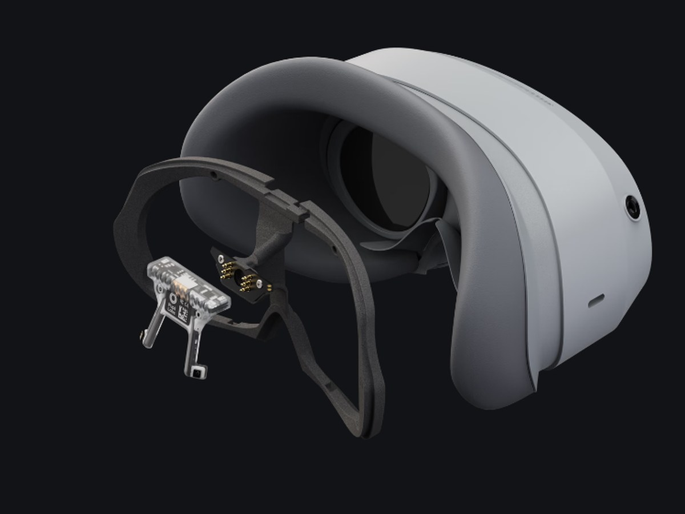
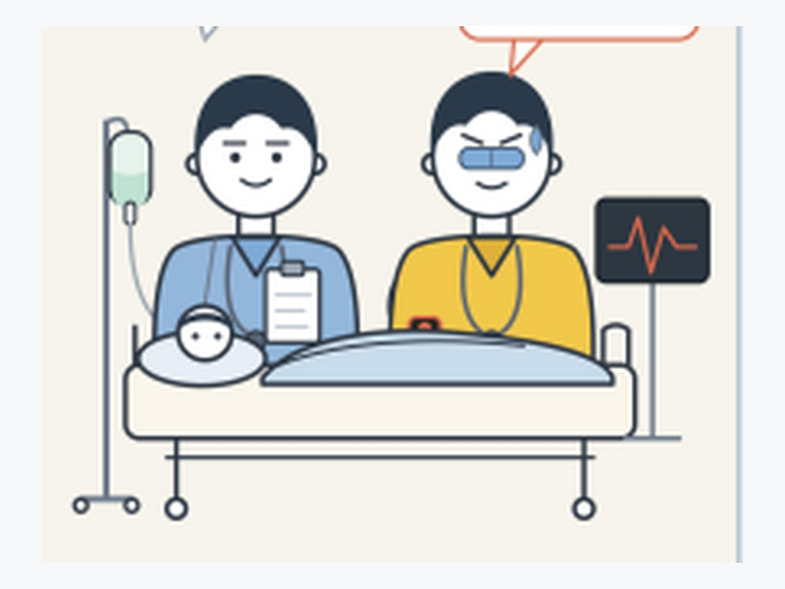
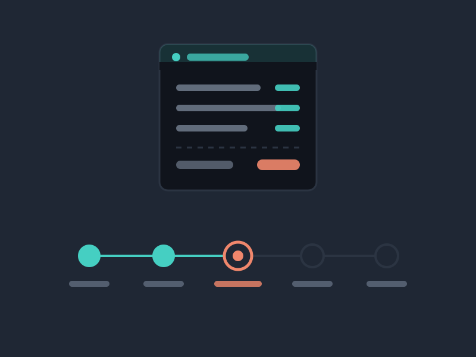
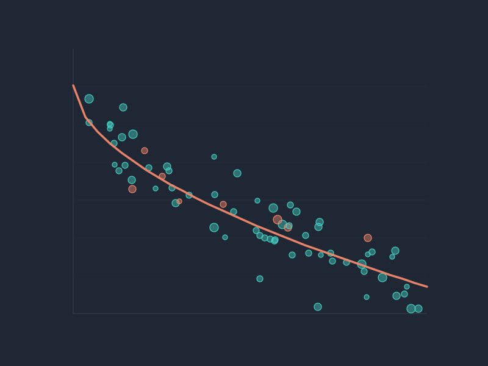
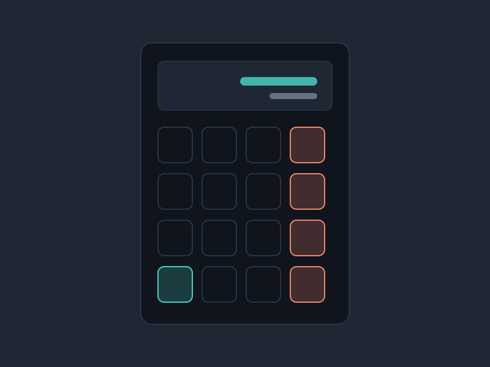
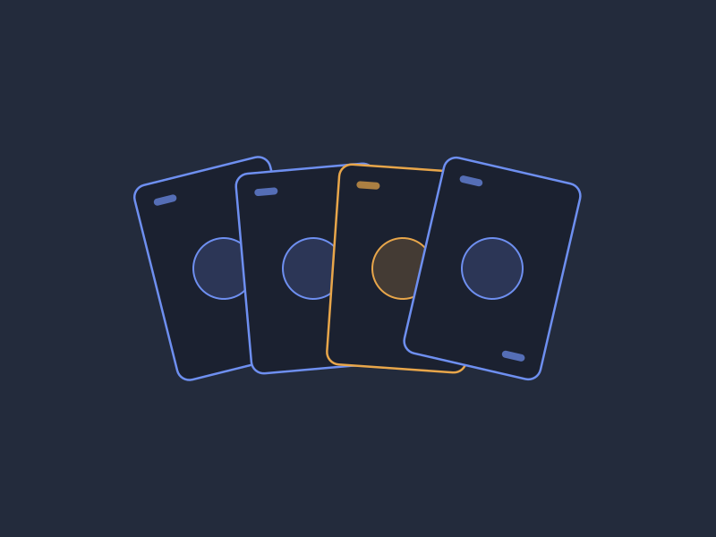
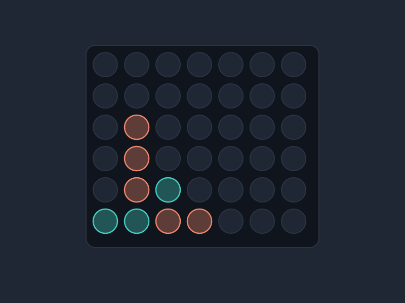
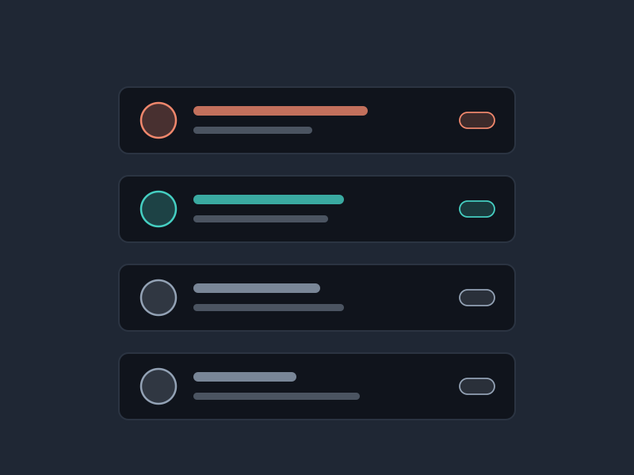
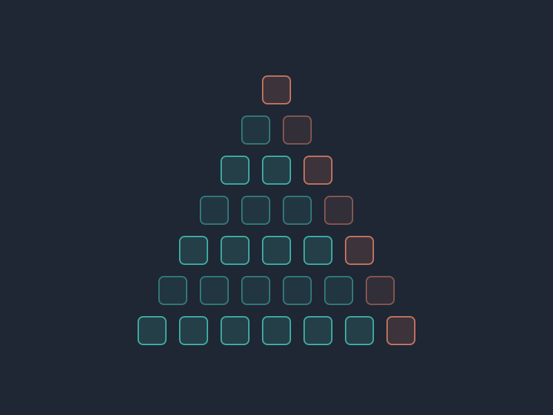

🔬Research
-
Conference Submission
CHI '27Under review
A co-authored submission currently under peer review. Details to follow once the review process concludes.
Co-author
-

Proactive AI VR Museum Companion
In progress · Extended Horizon Lab
A Unity VR system built independently on Meta Quest 3 with Pupil Labs Neon XR eye tracking. It processes gaze, fixation, pupil and dwell-time data to estimate where a visitor's attention actually is, maps real-time gaze onto 3D museum objects, and uses that state together with interaction history to decide when an AI companion should speak — so the system offers something at the moment a visitor is curious, rather than waiting to be asked.
Lead developer
- Unity
- C#
- Python
- Meta Quest 3
- Pupil Labs Neon XR
- Eye Tracking
- AI Agents
-

PulseCoach: State-Aware AI for XR
UIST '26 Student Innovation ContestUnder review
Combines physiological sensing, AI and augmented reality for adaptive coaching. EDA, HRV, PPG and IMU signals from an EmotiBit estimate user state in real time, and AR interventions fire when a cue will actually land rather than on a fixed schedule. Built around real-time biometric processing and context-aware delivery.
Co-author
- EmotiBit
- Python
- EDA / HRV / PPG
- IMU
- AR
- Multimodal Sensing
-

Playground+
Projection-based interactive XR · Extended Horizon Lab
A projection-based mixed-reality play system pairing a home projector and webcam over a shared floor space. I integrated a ZED 2i stereo camera while preserving webcam compatibility, lifting real-time performance from roughly 19 FPS to 26 FPS, and added depth sensing and perception on top of it so the AI agent could gauge where people were in the space and how they were moving. I also planned the full physical deployment — camera placement, projector selection, mounting, interaction space, computing requirements and budget.
Research developer
- Unity
- ZED 2i
- OpenCV
- Depth Sensing
- Computer Vision
- Projection Mapping
💻Software Projects
-

WolfCafe — Role-Based Ordering Platform
CSC 326 · Software Engineering · team project
A full-stack café ordering system: a Spring Boot REST API behind a React single-page frontend. Spring Security issues JWTs and gates every endpoint against four roles — admin, staff, customer, and a delivery driver role our team added — while orders move through a status lifecycle from pending to ready-for-pickup to completed, with a separate delivering and delivered path once a driver claims one. The backend is layered controller → service → repository with DTOs and ModelMapper keeping entities off the wire, persisted to MySQL through JPA. Admins configure a tax rate that records who changed it and when. 198 JUnit and Mockito tests cover the repository, service, and controller layers, including a suite that asserts each role can reach only what it should, and the Maven build runs Checkstyle and JaCoCo. We also did an accessibility pass: rem-based sizing throughout, screen-reader-friendly navigation links in place of buttons, and a colorblind-safe palette.
Contributor · team project tracked on a GitHub Projects board
- Java
- Spring Boot
- Spring Security
- JWT
- JPA / Hibernate
- MySQL
- React
- Vite
- JUnit
- Mockito
-
CoffeeMaker — Recipe & Inventory Service
CSC 326 · Spring Boot & React
A recipe and inventory service built twice, once solo and once with a team, as the foundation for the course's full-stack work. A Spring Boot REST backend handles recipe CRUD, ingredient management, and inventory tracking; the React frontend consumes it over Axios. The interesting piece is the make-recipe operation, which walks a recipe's ingredients against current stock, refuses the whole order if any single one is short, and only then deducts every amount and persists — so a partially-brewed drink can never leave inventory inconsistent. Both builds use a layered controller/service/repository structure with DTOs and hand-written mappers at the boundary. The team version promoted ingredients from fixed fields to a first-class entity with its own repository and endpoints, so new ingredients could be added at runtime instead of being baked into the schema. Roughly 130 JUnit tests across the two builds, covering repositories, services, and controllers.
Solo build and team build
- Java
- Spring Boot
- JPA / Hibernate
- REST
- React
- Axios
- JUnit
- Maven
-

Used Car Price Estimation & Multimodal Vehicle Valuation
CSC 422 · Automated Learning and Data AnalysisIn progress
A machine learning system that estimates the market value of a used vehicle from its characteristics — make, model, age, mileage, engine, transmission, accident history — and flags listings priced above or below that estimate. Our team trains and compares CatBoost, Random Forest and XGBoost on roughly 4,000 Cars.com listings, scored on MAE, RMSE and R². I own feature engineering, model evaluation and explainability: deriving vehicle age and average miles per year, analysing residuals to find where the models break down, and using SHAP to explain what drives any individual prediction. I also lead the computer vision extension, which identifies a vehicle's likely make, model and approximate year from photographs and feeds that into the pricing pipeline alongside details the user supplies.
Feature engineering, evaluation & computer vision · three-person team
- Python
- CatBoost
- XGBoost
- Random Forest
- SHAP
- Computer Vision
- Feature Engineering
-

Facial Recognition ATM
Solo project · C++, Python, OpenCV
An ATM login flow that replaces the PIN with real-time facial recognition. The recognizer is trained on labeled image sets using Haar Cascades for detection and LBPH for identification, and holds up across varying lighting and facial expression. After authentication it reads and writes account data in SQLite, with a CLI for balance checks, withdrawals and transaction logging. Authentication, interface and database sit in separate layers so each can be tested alone, and failed detection, database errors and unauthorized access are handled as expected states rather than crashes.
Creator
- C++
- Python
- OpenCV
- Haar Cascades
- LBPH
- SQLite
-

Job Application Organizer
Full-stack · Java, React
A job tracker with Java backend logic behind a React frontend. The State design pattern, implemented with inner classes, drives each application through Interview → Offer → Closed and keeps the legal transitions in one place. ArrayLists with custom comparators handle sorting, searching and filtering; simulated REST endpoints update status so changes reflect in the UI immediately; and shared views let more than one user see and update the same pipeline. The architecture leans on interfaces and method overrides, so a new state can be added without touching the existing ones.
Creator
- Java
- React
- REST
- State Pattern
- OOP
-

Class & Event Scheduler
Multi-platform · Java, C, React
A scheduler covering both academic classes and user-defined events, written across Java, C and React. Inheritance and polymorphism keep class behaviour and custom-event behaviour distinct while sharing a common base, search filters narrow a full course catalog, and timers and flags drive reminders. Built with a team on Agile sprints with structured conflict resolution, GitHub for version control, and JUnit tests covering each module.
Co-creator
- Java
- C
- React
- JUnit
- Agile
- Git
-

Data Structures Engine
CSC 316 · Java
A Java system built directly on AVL trees, binary heaps and adjacency lists rather than the standard library. It loads structured data files and runs searches, sorts and lookups against them; schedules weighted tasks through a custom heap-backed priority queue; and runs shortest-path and minimum-spanning-tree algorithms over a graph. Hash tables provide fast access with both chaining and open addressing, and every structure was chosen against a Big-O analysis and covered by JUnit tests on the edge cases.
Co-creator
- Java
- AVL Trees
- Heaps
- Graphs
- Hash Tables
- JUnit
📘Coursework
-

Decimal Math Calculator
C · systems programming
A command-line calculator handling decimal arithmetic with explicit precision control and formatted output. Input is parsed through fgets, strtod and sscanf with syntax validation and graceful handling of malformed input; each arithmetic type is encapsulated in its own function over a shared struct representation. Buffers and result storage are managed with manual allocation and cleanup, file I/O supports reading input and writing results, and it was debugged in GDB against division by zero and memory overflow.
Creator
- C
- Manual Memory
- File I/O
- GDB
-

Card Deck Simulator
C · systems programming
A 52-card deck simulation using structs for individual cards and arrays for the deck itself. Shuffling is a Fisher–Yates implementation working through direct pointer manipulation, drawn cards get dynamically allocated storage that is freed on reshuffle, and deck state persists between runs through file I/O with fopen, fprintf and fscanf. Debugged in GDB against drawing from an empty deck and malformed saved state.
Creator
- C
- Structs
- Pointers
- Fisher–Yates
- File I/O
-

Connect Four
Java · object-oriented design
A console Connect Four with real-time board rendering over 2D arrays. Turn management, board updates and win detection across horizontal, vertical and both diagonals are each scoped to their own methods, and column input is validated against illegal and overflow moves before anything is written. Unit tests cover the gameplay logic and every win condition.
Co-creator
- Java
- 2D Arrays
- OOP
- JUnit
-

Coffee Shop Simulator
Java · object-oriented design
A self-service coffee shop modelled with classes for customers, drinks, orders and inventory. Item data is encapsulated behind constructors and accessors with object state validated on creation, command-line ordering checks stock and prices dynamically off the menu, and restocking plus clear error messaging handles the case where ingredients run short mid-order. ArrayLists and arrays manage the order queue and live stock, with JUnit coverage across object creation, ordering and restock paths.
Creator
- Java
- OOP
- Collections
- JUnit
-

Patterns Generator
Java · fundamentals
A console tool that renders symmetrical patterns — triangles, grids, diagonals — from user-specified characters and dimensions. Nested loops and conditionals generate the geometry, each pattern type lives in its own reusable method, and input size and characters are validated before anything renders. Computation and output are deliberately separated, with JUnit tests across edge sizes and invalid input.
Creator
- Java
- Nested Loops
- Method Decomposition
- JUnit
© 2026 Nathan Tran · Raleigh, North Carolina